Maninder Pal Singh waits for costumers to order in Punjabi Grocery and Deli in the Lower East Side
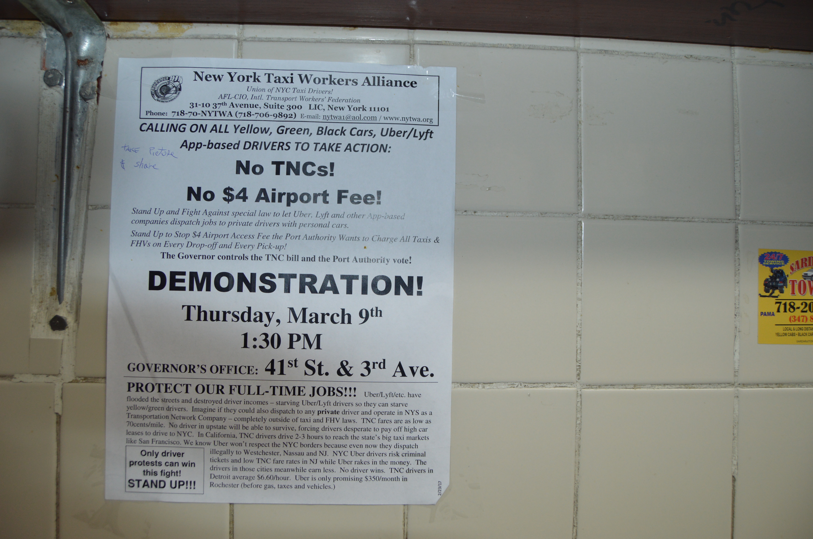
A New York City Taxi Workers Alliance poster in Punjabi Grocery and Deli calls for people to take action against TNCs (Tranportation Network Companies) like Uber and Lyft that make it difficult for full-time drivers to make a living wage
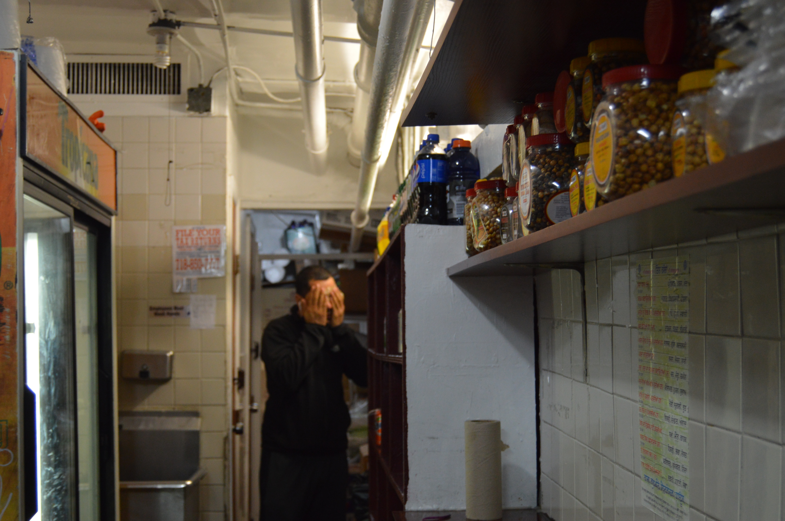
A customer washes his face in a sink in the back of Punjabi Grocery and Deli in the Lower East Side
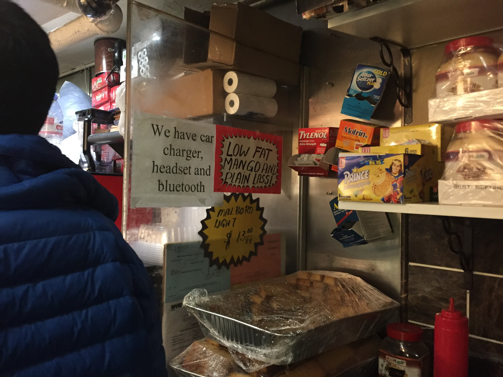
A sign in Lahore Deli in Soho offers car chargers, headsets, and bluetooth to customers, majority of whom work as yellow can and app-based drivers

On the left, a sign requesting that patrons do not throw tea bags, urine bottles, or garbage near the deli area. On the right, Randy a regular at Dil-E Punjabi Deli takes a break on store crates
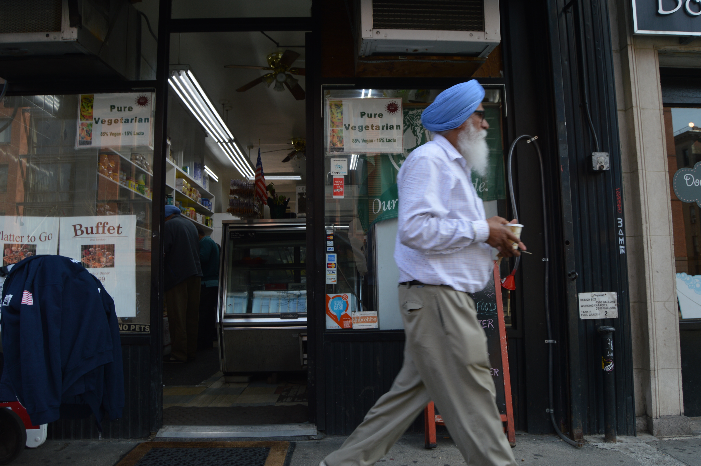
Costumer leaves Dil-E Punjabi Deli with a cup of tea

Inside of Punjabi Grocery and Deli
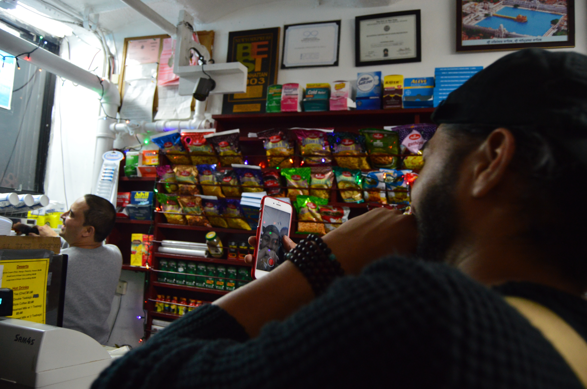
Young customers replay a Snapchat video they just took inside of Punjabi Grocery and Deli
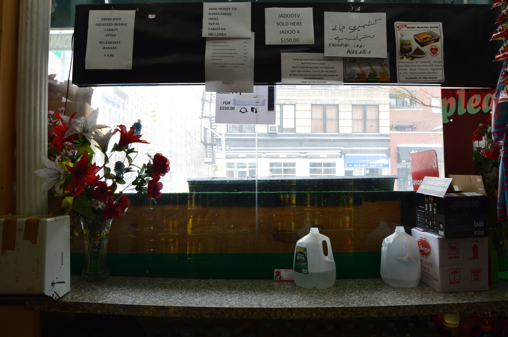
Inside of Kharian Deli information hangs above eating area and customers are offered free Poland Spring water

Ghirlandaio Zakira, owner of Kharian Deli in Chelsea waits for customers during Storm Stella on March 14th
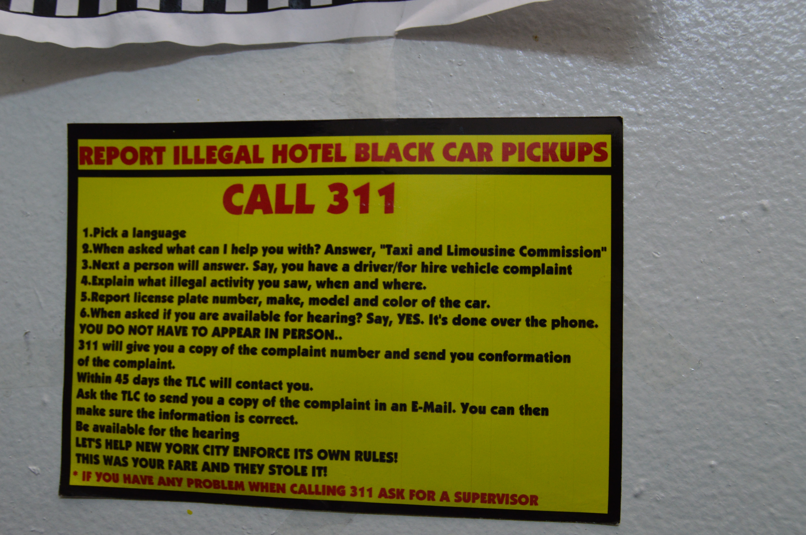
A sticker on the wall of Dil-E Punjabi Deli in Chelsea encourages patrons to call 311 to report illegal hotel black car pickups that hurt the business of yellow cab and app-based drivers
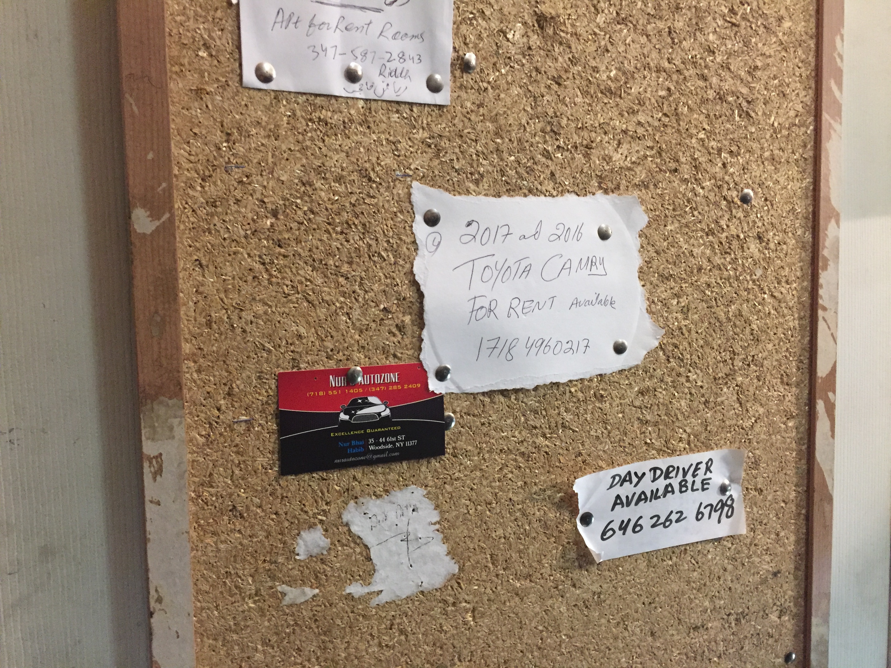
A community bulletin board hung on the door of a restroom inside Lahore Deli in Soho
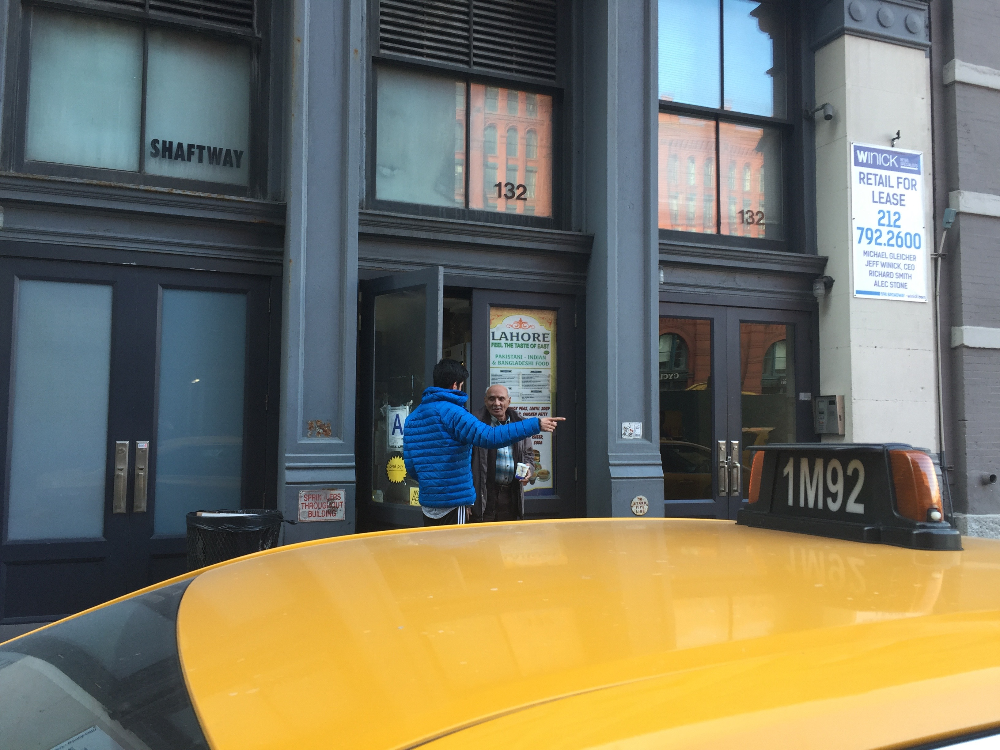
another caption here
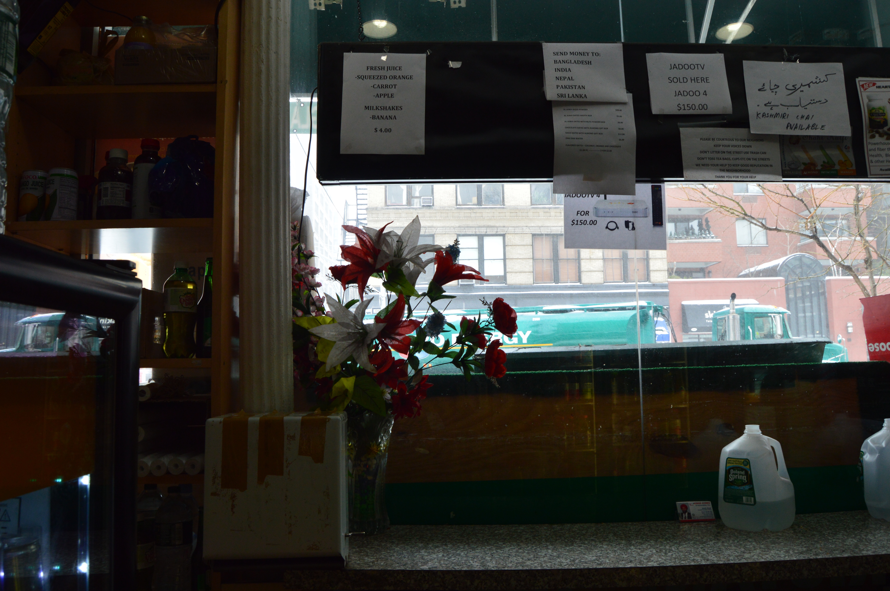
another caption here

another caption here
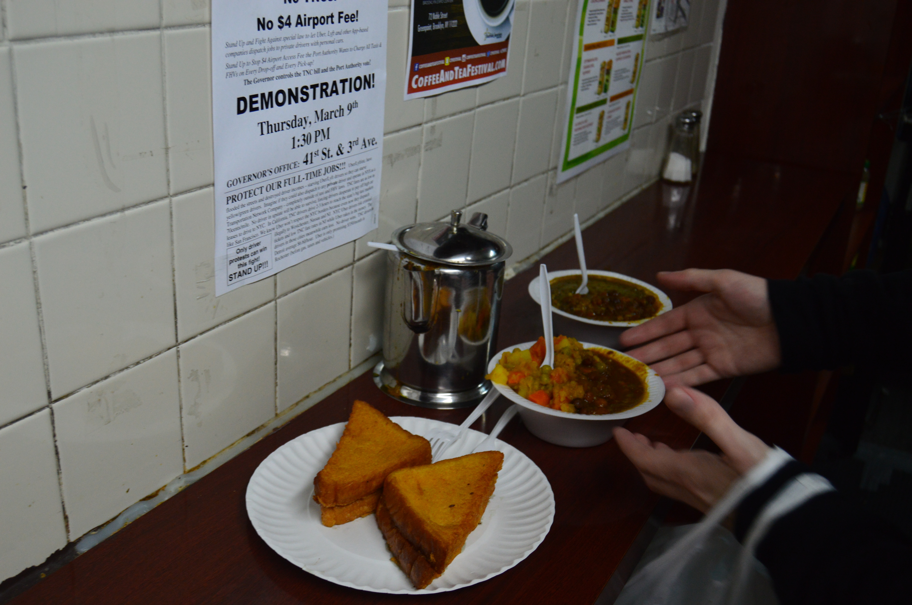
another caption here
Author bio will go here thanking the delis for sharing their space and stories with me.